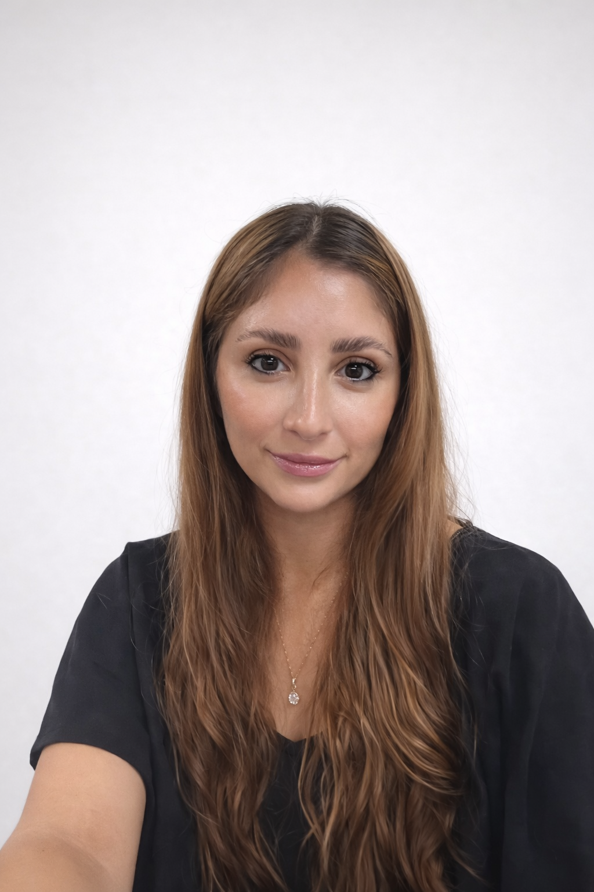
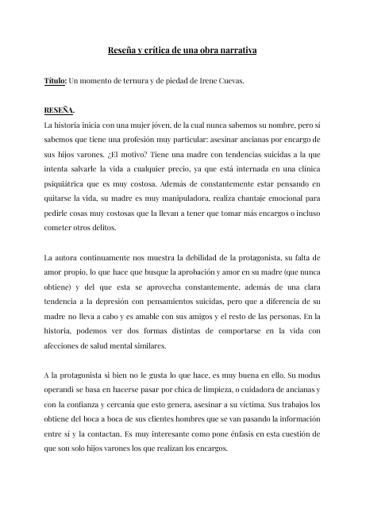
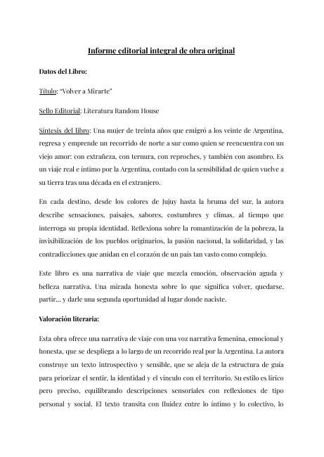
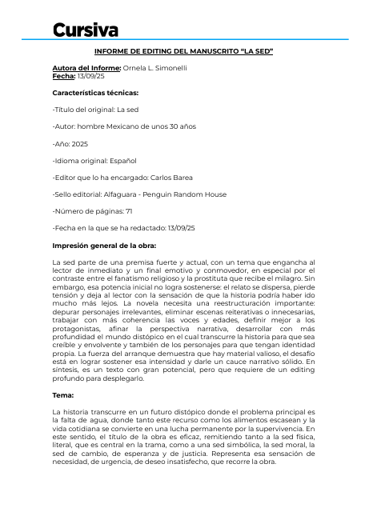

Itinerario de Edición Profesional
Penguin Random House · Cursiva · 2026
Abogada · Editora y lectora editorial · Gestión de derechos
Una trayectoria construida alrededor de las palabras, la precisión y el cuidado de cada texto.

Soy abogada y cuento con más de nueve años de experiencia en redacción, revisión y coordinación documental. Me especialicé en edición profesional y editing de manuscritos en Cursiva, de Penguin Random House.
Años de experiencia profesional trabajando con documentación compleja, revisión y control de calidad.
Mi experiencia incluye elaboración y revisión de resoluciones, coordinación de versiones, detección de inconsistencias y mejora de procesos documentales.
Actualmente amplío mi formación en agencias literarias y gestión de derechos con PARIX, profundizando en la representación de autores y las relaciones entre editoriales y coagentes. Me interesa especialmente el scouting literario y la circulación internacional de obras entre Argentina y España.
Busco contribuir a equipos editoriales donde la atención al detalle, el trabajo colaborativo y la calidad de publicación sean esenciales.
Experiencia práctica en evaluación, desarrollo y revisión de ficción. Los títulos y la identidad de autores inéditos se mantienen confidenciales.
En curso. Colaboración directa con la autora en construcción del mundo y personajes, acompañamiento creativo e inicio de revisión de los primeros capítulos.
Evaluación preliminar de un manuscrito inédito de aproximadamente 97.000 palabras; muestra de editing y propuesta de intervención editorial.
Prácticas de editing e informes de lectura en Cursiva; desarrollo de briefings, contracubiertas y argumentos de venta.
Una selección de trabajos de análisis y escritura editorial que pueden consultarse en su versión completa.

Un momento de ternura y de piedad, de Irene Cuevas. Reseña descriptiva y valoración crítica de la construcción de personajes, los conflictos, los recursos narrativos y el desenlace de la obra.
Leer informe en la web ↗
Informe de evaluación editorial de Volver a Mirarte, con síntesis, valoración literaria y comercial, análisis del público lector, sugerencias de editing y recomendación de sello editorial. Trabajo realizado en el marco de la formación editorial.
Leer informe en la web ↗
Elaboración de un informe de editing sobre un manuscrito de ficción distópica, centrado en el análisis estructural, narrativo y estilístico de la obra.
Se trabajó en la evaluación de trama, construcción de personajes, coherencia del worldbuilding, ritmo narrativo y funcionamiento del lenguaje, identificando fortalezas y debilidades del texto.
El informe incluye propuestas concretas de mejora orientadas a la reestructuración narrativa, el desarrollo de personajes y la optimización del potencial literario y comercial de la obra.
Trabajo realizado en el marco de formación editorial, con enfoque profesional.
Mi itinerario combina edición, editing y evaluación de manuscritos con conocimientos de procesos editoriales y gestión de derechos.
Penguin Random House · Cursiva · 2026
Penguin Random House · Cursiva · 2025
PARIX · En curso, 2026
Universidad Nacional del Litoral · Especialización, 2025
Estoy interesada en aportar mi experiencia en revisión de textos, coordinación documental y mi formación editorial a proyectos de calidad.